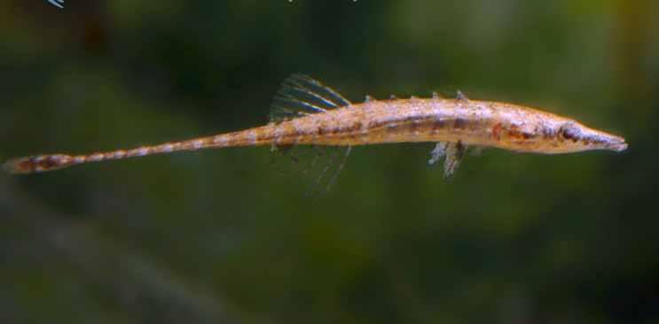

Systématique
- Ordre : Synbranchiformes
- Famille : Indostomidae
- Genre : Indostomus
- Espèce : I. paradoxus

Indostomus paradoxus est l'espèce type du genre Indostomus et de la famille des Indostomidae. Découverte dans le lac Indawgyi en Birmanie, cette espèce miniature unique possède une morphologie singulière qui a longtemps dérouté les taxonomistes.
Mesurant à peine 2,5 à 3 cm, ce poisson présente un corps allongé, protégé par une armure de plaques osseuses dermiques. Sa tête se termine par un museau tubulaire caractéristique. Les nageoires dorsales sont réduites à une série de 5 épines isolées suivies d'une nageoire molle. Sa coloration varie du brun clair au brun foncé, marbrée de motifs cryptiques qui lui permettent de se fondre parfaitement dans le décor, ressemblant à une brindille ou un débris végétal.
Comme I. crocodilus, c'est une espèce benthique, calme et extrêmement discrète. Il se déplace lentement, souvent en utilisant ses nageoires pectorales pour "planer" ou ramper sur le substrat et les feuilles. Il ne nage en pleine eau que très rarement et sur de très courtes distances.
En aquarium, il est pacifique mais vulnérable à la concurrence alimentaire. Il convient parfaitement aux nano-aquariums spécifiques ou en cohabitation avec de très petites crevettes et des micro-poissons calmes (type Boraras). Il passe ses journées à inspecter le décor à la recherche de micro-organismes.
Mode : Ovipare, pondeur sur substrat caché (cavernicole).
La reproduction est possible en aquarium. Le mâle sélectionne une petite cavité, souvent un tube creux (tige de bambou, tuyau PVC de petit diamètre), et y attire la femelle. Après la ponte, la femelle est chassée et le mâle assure seul la garde et la ventilation des œufs jusqu'à l'éclosion. Les alevins, minuscules, nécessitent une nourriture microscopique (rotifères, paramécies) dès la résorption du sac vitellin avant de passer aux nauplies d'artémias.
Dimorphisme sexuel : Subtil mais observable chez les adultes. Les nageoires pelviennes (ou ventrales) du mâle sont plus longues et recourbées vers l'extérieur, tandis qu'elles sont plus courtes et droites chez la femelle. En période de frai, la femelle présente un abdomen visiblement plus rebondi.
Espérance de vie : Courte, généralement estimée entre 2 et 3 ans en captivité.
Indostomus paradoxus est endémique du lac Indawgyi, le plus grand lac de Birmanie, et de ses zones humides environnantes. Il fréquente les marges du lac, riches en végétation aquatique dense, en algues filamenteuses et en matières organiques en décomposition. L'eau y est claire à légèrement teintée, avec un fond vaseux ou tourbeux. Il s'abrite parmi les racines et les plantes flottantes.
Répartition

Origine naturelle :
- Birmanie (Myanmar) : Endémique du Lac Indawgyi (État Kachin).
- Localité type : Nyaungbin, extrémité nord du lac Indawgyi.
Paramètres de maintenance
Température : 22 à 27 °C.
pH : 6,5 à 7,5 (neutre à légèrement acide).
GH : 5 à 15 °dGH.
Courant : Nul à très faible (indispensable).
Volume conseillé : Un nano-aquarium de 20 à 40 L est idéal. Le décor doit comporter de nombreuses cachettes, des plantes à feuilles fines et idéalement des feuilles mortes au sol.
Régime alimentaire
Régime : Micro-prédateur strict.
Difficile à nourrir avec des aliments artificiels. Il exige quasi exclusivement du vivant : nauplies d'artémias, daphnies, cyclops, micro-vers. Avec de la patience, certains spécimens peuvent accepter le congelé de très petite taille, mais le vivant reste la clé de la réussite pour cette espèce délicate.